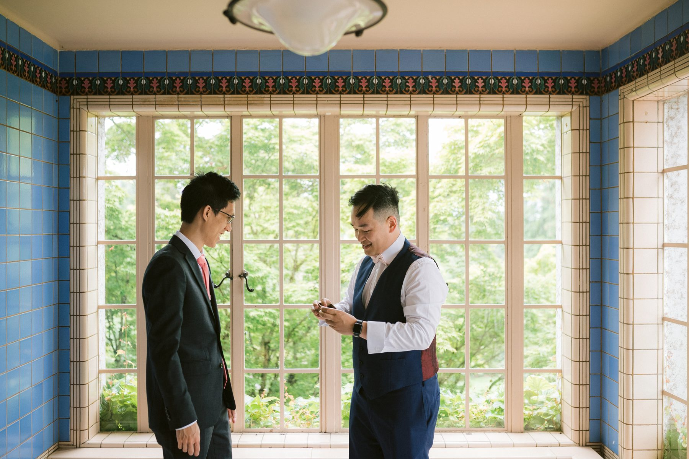
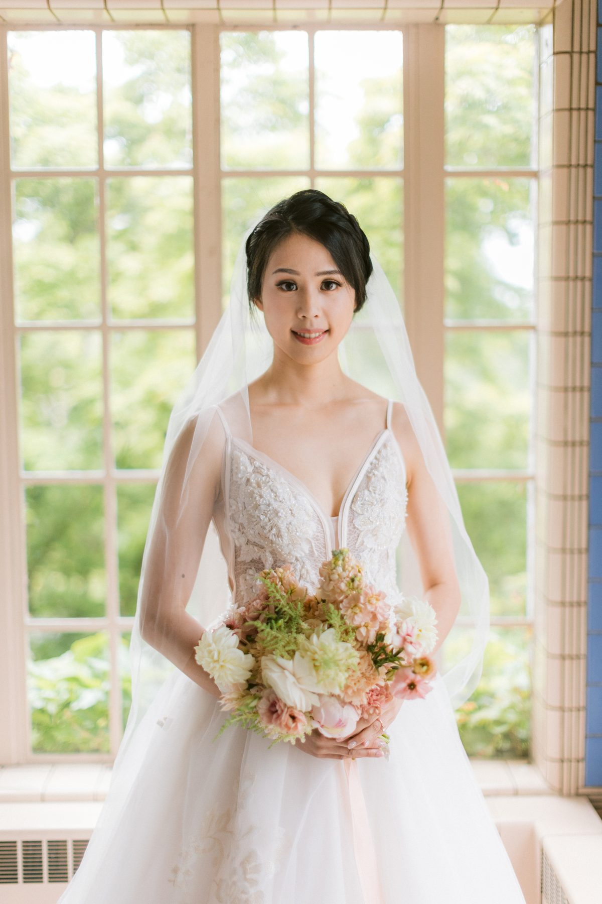
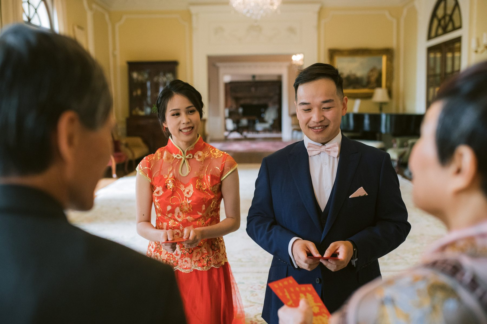
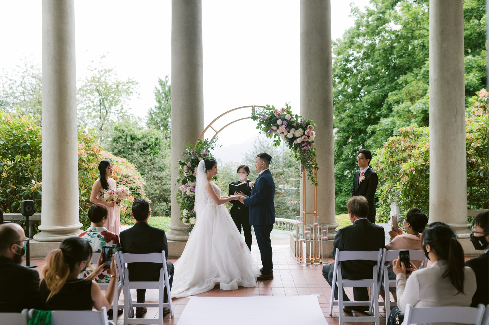
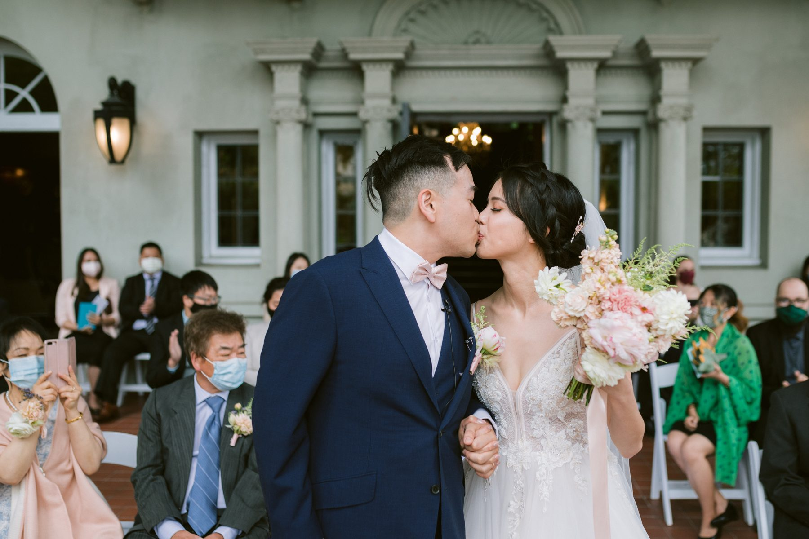
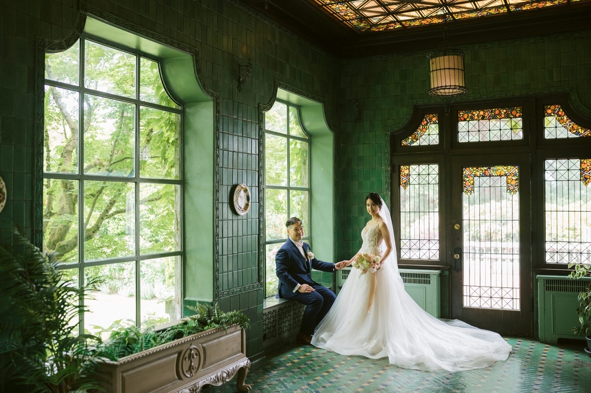
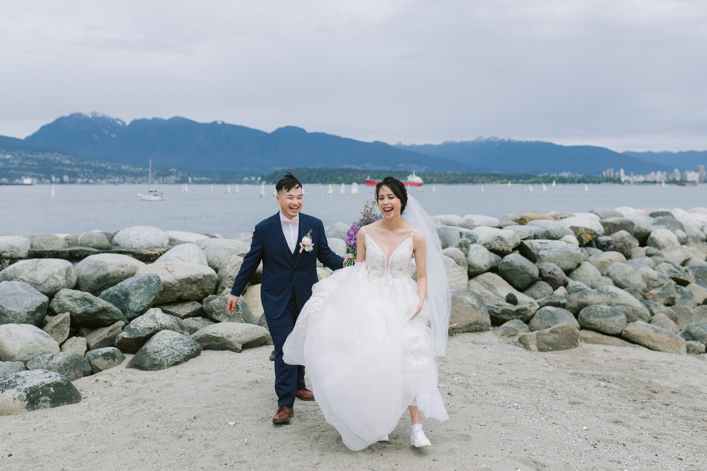

Bessie and Raymond's guests arrived under umbrellas.
I shot that from above because it is one of the best frames of the day. A terrace of terracotta tile, a grey sky, and a dozen black and clear umbrellas bobbing toward the door of a mansion. Nobody looked unhappy. They looked like people going to a wedding.
Here is what I told Bessie and Raymond that morning, and what I will tell you. Overcast is not a problem. A covered terrace is a gift.
If you read our snow day wedding at Hycroft Manor, you have seen the building already. Same blue tile sunroom, same green conservatory, same columned terrace. It is a venue I know well, and I will keep shooting it, because it does something few Vancouver venues manage. It gives you four distinct looks in one footprint.
Bessie and Raymond used all four.

Raymond got ready in the sunroom. Blue tile up to the ceiling, a wall of windows, soft green garden light coming through. A groom and his best man in a room like that look like a magazine layout without anyone trying.
Bessie sat at a window with her bouquet. Pale pink, cream, a little green. She looked out at the garden for a minute and then looked straight at us.

Window light is the single biggest upgrade you can give a getting ready portrait. Ask any photographer. Then ask your venue which room has the biggest window and book your hair and makeup there.
Before the ceremony, Bessie and Raymond served tea to their parents and elders in the drawing room. A gold sofa, a fireplace, a patterned rug, and a stack of red envelopes.

If you are planning a tea ceremony on the same day as a Western ceremony, give it forty five minutes minimum. Not twenty. People will want to take their time. Elders will want to say a few words. Cousins will want photos. Build it into the schedule and the whole day relaxes.
Then the ceremony. White chairs along a covered colonnade, a floral arch of lavender, blush and green, the garden dripping quietly behind it.

The covered terrace is the quiet hero of this venue. The roof keeps the rain off your guests. The columns frame the couple. And the light stays soft and even all afternoon because the garden bounces it back in from both sides.
It is also one of the few outdoor ceremony spaces in Vancouver where I do not need a backup plan. I still have one. But it has never needed using.

After the ceremony we took the couple out to the terrace balustrade and the clipped hedges. Navy suit, ivory dress, green everywhere. You do not need a location for a portrait like this one. You need a wall, a hedge and ten quiet minutes.
Before dinner we ducked back inside to the green conservatory, a small room with dark wood, tall windows and a lot of leaves. It photographs like a different building.

This is the bit I would push every couple to try. After the formal portraits, we drove to the west side shoreline. Rocks, grey water, the North Shore mountains across the inlet, and a skyline smudged by cloud.

Fifteen minutes of that gave Bessie and Raymond a completely different set of photos from the rest of the day. Open sky, open water, her dress catching the wind. A venue is one backdrop. A great gallery has two or three.
Choose a venue with a roof over at least part of the ceremony. Choose rooms with windows. Budget forty five minutes for a tea ceremony. And keep a fifteen minute window open for somewhere that is not your venue.
If your date lands on a grey Vancouver afternoon, you will be fine. Most of the best wedding photos I take happen under a grey sky.
SimplyWed Studio is a Vancouver wedding and elopement photography studio. We know this venue room by room. Send us your date through the contact page and we will talk through the light.
← Back to the journal